Восстановление RAID массивов
Восстановление RAID с гарантией результата!
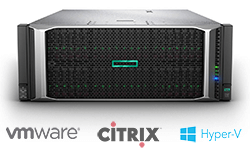
RAID массив вышел из строя, нет доступа к данным, перешел в состояние Degraded или Offline? Команда экспертов лаборатории готова восстановить данные RAID массива и вернуть к работе сервер в самые короткие сроки. Мы умеем и знаем, как решать сложные задачи. Детально разбираемся в системах виртуализации VMware, Citrix, Hyper-V. Быстро восстанавливаем данные после механических повреждений дисков массива, сбоя или отказа контроллера. Работаем на лучшем оборудовании - комплексах PC3000 Express Data Extractor RAID Edition.
Минимальные сроки выполнения работ!
Сделаем быстрее, чем кто-либо другой. Сразу приступаем к работе. В наличии самый большой склад серверных жестких дисков SCSI, SAS и Fibre Channel. Восстановление RAID массивов выполняется в круглосуточном режиме. Работы по сборке производятся исключительно с посекторными копиями жестких дисков, что исключает возможность потери данных. Не важно, какие проблемы возникли с RAID массивом, сервером или NAS. Инженеры лаборатории Storelab помогут восстановить данные в самые короткие сроки.
Уникальное оборудование для восстановления RAID
Storelab - единственная лаборатория в Москве, в которой есть полный комплекс оборудования для работы с RAID массивами на серверных дисках SCSI, SAS, Fibre Channel. Включая последнюю версию комплекса PC3000 Express SAS с DATA Extractor и RAID Edition. И квалифицированные инженеры с большим опытом восстановления данных RAID систем.
Восстановление RAID массива в самой мощной лаборатории
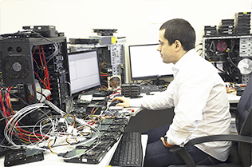
Бесплатная диагностика

Комплексы PC-3000 RAID
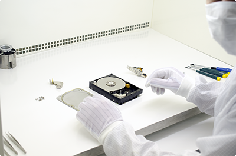
Современное оборудование

Чистая комната ISO 14644
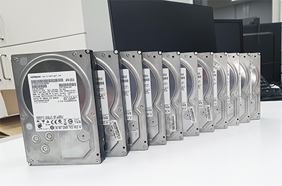
Поддержка всех контроллеров
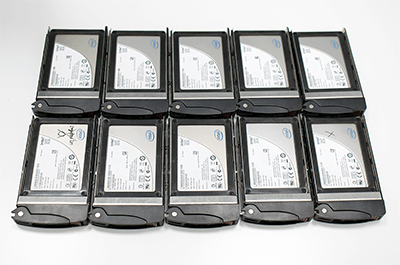
Поддерживаем SATA, SCSI, SAS
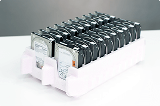
VMware, Citrix, Microsoft
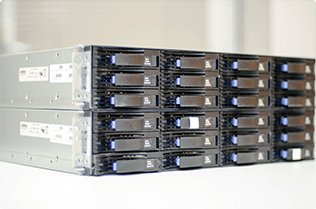
Круглосуточное восстановление
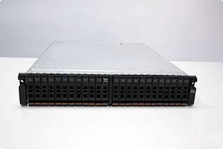
Восстановление серверов
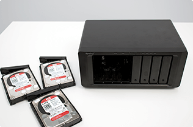
Работаем с любыми NAS / SAN
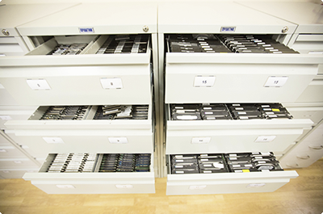
Все запчасти в наличии

Сразу приступаем к работе
Восстанавливаем RAID массивы любых уровней: JBOD, 0, 1, 1E, 5, 5E, 5EE, 6, 10, 50, 60 и другие комбинации.
Восстанавливаем RAID на контроллерах: Adaptec, HP, Silicon image, Promise, LSI, Mylex, Intel, SUN, HighPoint, EMC, Infotrend.
Работаем со всеми файловыми системами: NTFS, XFS, EXT2, EXT3, ReiserFS, NSS, HFS, HFS+, NWS, UFS, UFS2.
Восстанавливаем инфраструктуры, организованные с помощью решений для виртуализации VMware, Citrix, Microsoft.
Основные причины выхода RAID из строя
-
Падение сервера или сетевого хранилища NAS
-
Выход из строя более одного жесткого диска из RAID 5
-
Выход из строя более 2 жестких дисков из RAID 6
-
Выход жесткого диска из строя в RAID 0
-
Выпадение во время Rebuild одного или нескольких дисков
-
Выход из строя RAID контроллера
-
Сброс/удаление конфигурации RAID массива
-
Выход из строя двух и более дисков в системе RAID 10
-
Перестроение RAID массива с неактуальными блоками данных
-
Ошибки файловой системы, данные удалены/пропали/не видны
-
Пересоздание/инициализация RAID массива
-
Разрушение файловой системы массива
Какие бывают уровни RAID массивов
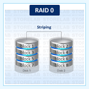
Является конфигурацией массива без избыточности. Информация разбивается на блоки данных и записывается на несколько дисков одновременно. Отказ любого диска приводит к разрушению всего массива. Так как массив не является избыточным, процедура восстановления в случае выхода одного винчестера из строя, не предусмотрена. Надежность зависит от надежности каждого из дисков. Массив предназначен не для надежного хранения данных, а для повышения производительности
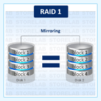
Зеркалирование данных, массив с избыточностью, где два диска полностью идентичны. Контроллер отвечает за одновременную запись на оба диска, обеспечивания тем самым "зеркалирование" информации для обеспечения избыточности. Выход из строя одного из них не ведет к потере данных. Данный вид обеспечивает высокую надежность хранения информации. При выходе и строя контроллера, данные можно считать подключив диск напрямую. Самый надежный вариант.
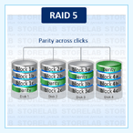
Чередование с контролем четности. Чередование блоков данных происходит между тремя или более дисками. Все диски равноценны, а блоки четности разделены между ними. В таком случае при выходе из строя одного из них, данные не утрачиваются, и массив после перестроения (rebuild) может продолжать работу. Однако выход нескольких дисков из строя уже разрушит массив. Уровень 5 является одним из наиболее популярных реализаций RAID.
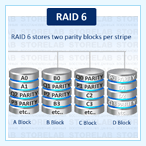
Конфигурация очень похожа на RAID 5: в обеих используется чередование данных между жесткими дисками с распределенным блоком четности. Блок четности позволяет массиву реконструировать данные в случае отказа одного из жестких дисков. Однако RAID 6 использует функцию двойного контроля четности. Что позволяет выдержать отказ двух жестких дисков без потери данных.
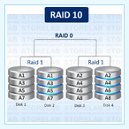
Это составная конфигурация, предоставляющая избыточность RAID 1 вместе с высокой скоростью записи и чтения RAID 0. Емкость массива составляет половину от общей емкости всех дисков, а массив требует минимум 4 диска. В каждом массиве данные чередуются между зеркалированными дисками, и таким образом, массив при отказе одного жесткого диска не произойдет потери данных.
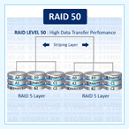
Фактически представляет собой массив RAID 0, состоящий из массивов конфигурации RAID 5. Они работают так же, как обычный RAID 5 массив, а это означает, собрать массив можно из минимум шести дисков. Емкость массива RAID 50 является суммой всех RAID 5 емкостей массива. Он характеризуется большей отказоустойчивостью и более высокой скоростью работы, чем пятый рейд.
Как производится восстановление данных c жесткого диска
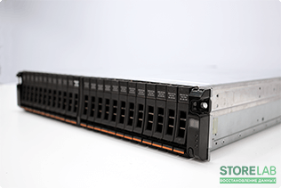
IBM Storwize V3700 LFF (24 HDD)
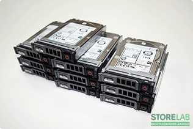
RAID 5 Dell ST1800MM0168 (10 HDD)
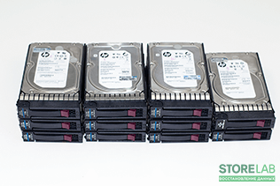
Hitachi Ultrastar C10K600 (24 HDD)
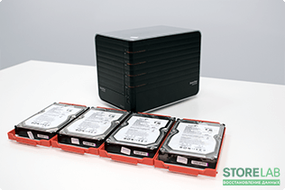
RAID 5 Promise SmartStor NS4300N
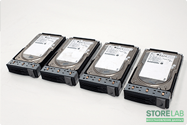
RAID 0 SCSI Fujitsu (4 HDD)

RAID 5 Hitachi BTRFS (12 HDD)
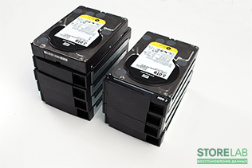
RAID 5 WD3000FYYZ (8 HDD)
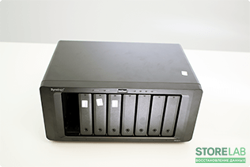
Synology DS1817+ WD60EFRX (8 HDD)
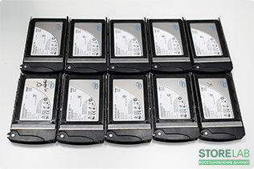
RAID 6 SSD Intel SSDSA2M160G2C
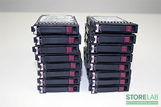
RAID 5 HP EG1200JEHMC (16 HDD)
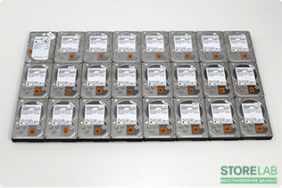
RAID 6 Hitachi 7K2000 (24 HDD)
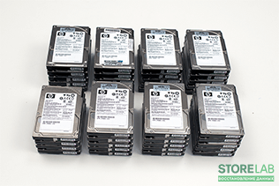
RAID 6 HP DG146ABAB4 (36 HDD)
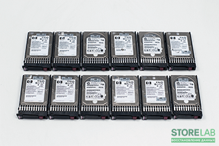
RAID 6 Hitachi 7K2000 (24 HDD)
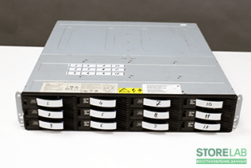
RAID 6 Hitachi HDS722020ALA330
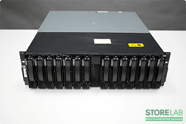
IBM EXP400 ST2000NM0023 (14 HDD)
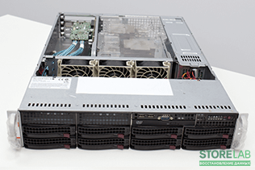
RAID 5 Supermicro Seagate (8 HDD)
Лучшие специалисты по восстановлению данных в Москве
Александр Гуревич
Инженер
опыт работы 14 лет
Александр Гуревич
Инженер
опыт работы 14 лет
Александр Гуревич
Инженер
опыт работы 14 лет
Александр Гуревич
Инженер
опыт работы 14 лет
Александр Гуревич
Инженер
опыт работы 14 лет
Александр Гуревич
Инженер
опыт работы 14 лет
Александр Гуревич
Инженер
опыт работы 14 лет
Александр Гуревич
Инженер
опыт работы 14 лет
Сертифицированные эксперты
Постоянное обучение и повышение квалификации инженеров, позволяет нам выполнять самые сложные и нестандартные случаи восстановления данных. Многие компании только на словах заявляют о своем профессионализме. Мы можем подтвердить это многочисленными дипломами и сертификатами.
Storelab занимается постоянным развитием команды с 2009 года. Все наши специалисты регулярно проходят обучение в компании АCELab, которая является лидером в области производства программно-аппаратных комплексов PC-3000 для восстановления данных.
Разбираемся в RAID массивах лучше конкурентов
По файловой системе вычислен нестандартный алгоритм чередования блоков данных, размер блока 1024 Кб, данные успешно восстановлены на 100%.

Данные восстановлены частично, примерно на 60% со слов заказчика, ни одна база данных не работает.
Вычитаны посекторные копии всех дисков, включая неисправные, вычислены параметры RAID 5, фс EXT4, блоки данных и XOR по 128 Кб, Данные собраны в 100% объеме и переданы заказчику на отдельном жестком диске WD 12 Tb.
Создали тикет, техподдержка запросила удаленный доступ, но за неделю ничего сделать не смогли. Подключались или нет неизвестно, больше на запросы не отвечали.
За сутки считаны посекторные копии дисков, затем вычислены параметры конфигурации RAID массива по файловой системе, смещение, размер блока, порядок дисков. На третий день данные успешно восстановлены и переданы заказчику на новом жестком диске.
За 2 недели не смогли вычислить уровень массива, параметры конфигурации. Данные не восстановлены. Заказчику сообщили о полной потере данных и невозможности восстановления.
На шести жестких дисках произведены работы в гермозоне по замене БМГ с дальнейшим вычитыванием на ПАК PC3000, вычитаны остальные необходимые для сборки диски, определены параметры raid, данные успешно восстановлены. Все искомые виртуальные машины проверены и полностью восстановлены. Результат 100%.
Продержали массив неделю, что делали неизвестно, результат 0, на звонки заказчика перестали отвечать.
Данные восстановлены на 99% за сутки. Структура каталогов и названия файлов сохранены в первоначальном виде. Работы выполнялись круглосуточно в срочном режиме.
Восстановили около 10% данных без названий файлов и структуры. Размер каждого файла не более 2 Мб.
Наши кейсы | Примеры восстановления данных
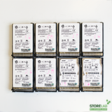
Привезли на восстановление RAID 5. Массив собран на винчестерах Seagate Constellation ES.2 модели ST32000645NS. Диски отработали с 2013 года, около восьми лет. Показатель надежности очень неплохой для круглосуточной эксплуатации в компании. Но всему приходит свой срок. Два диска выпали из массива по причине механических проблем.

Сделали небольшой RAID. Массив собран из четырех дисков Western Digital RED WD60EFRX. Диски работали в сетевом хранилище Netgear ReadyNAS 214. Вышел из строя один из дисков, RAID 5 работал без избыточности в состоянии degraded около недели. Затем, заказчик приобрел новый винчестер на замену. Процесс ребилда не завершился, так как выпал еще один диск.
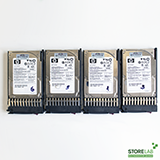
Клиент прислал курьером на восстановление небольшой массив. Массив собран на четырех жестких дисках Seagate ST1000DM003. Работал во внешней коробке Promise Pegasus с компьютером Apple. В какой-то момент один из дисков выпал из массива, загорелся красный индикатор и массив пропал.

Привезли на восстановление массив из сервера HP после наводнения. Сервер утонул вместе с жесткими дисками, его сдали в ремонт, а диски к нам. Восемь SAS винчестеров, из них два по 450 Gb, остальные шесть штук по 400 Gb. Задача: восстановить базы 1С, документы, бэкапы
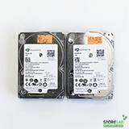
Восстановить данные RAID 6 массива. История потери примерно такая: ночью был сбой по питанию, сервер вышел из строя. Три из шести жестких дисков имеют проблемы по механике. Предположительно, был RAID 6. Пробовали восстановить самостоятельно и обратились к нам.

RAID 10 массив работал в сервере Dell. Это основной почтовый сервер компании. Массив разбит на два логических раздела. На первом томе находилась операционная система, на втором - виртуальная машина. Сначала пропал доступ на второй раздел, операционка работала. Он был виден, но доступа не было.
Мы и наши работы на YouTube
Истории успеха восстановления данных
Благодарственные письма
Все работы связанные со вскрытием гермоблока жесткого диска проводятся исключительно в чистой комнате. Современное оборудование и программно-аппаратные комплексы PC-3000 Express RAID для восстановления винчестеров и сборки массивов позволяют нам успешно решать задачи любого уровня сложности.
Что делать если RAID вышел из строя
Первое, это подготовка устройства. Если данные уже недоступны, ни в коем случае не производите запись на этот массив - это уменьшает шансы на успешное восстановление. Перезапись могут производить например следующие операции: запуск перестроения RAID после замены более одного неисправного диска или пересоздание конфигурации RAID. Если массив недоступен по причине выхода нескольких дисков из строя, то необходимо полностью выключить устройство. Привезти к нам в лабораторию можно как целиком весь сервер, так только жесткие диски - обязательно все, в том числе неисправные, которые заменили.
Диагностика начинает проводиться сразу, как только RAID или диски привозят в наш офис. Время выполнения диагностики зависит от количества носителей, их состояния, файловой системы, производились ли пользователем действия, усложняющие работу. Такие как замена дисков, запуск ребилда, инициализация или пересоздание RAID, создание новой конфигурации и так далее. Обычно на диагностику уходит от 30 минут до нескольких часов. После диагностики мы даем экспертное заключение о возможности восстановления данных, делаем коммерческое предложение, согласовываем договор и соглашение о конфиденциальности с заказчиком.
Как производится восстановление данных
Для восстановления RAID массива необходимо: вычитать посекторную копию каждого из дисков массива, включая неисправные. Такие диски реанимируются отдельно. После получения полных копий всех винчестеров начинается разбор логики и файловой системы с помощью HEX редакторов. По файловой системе определяются параметры массива - уровень RAID, актуальные и неактуальные блоки данных, XOR, размер блока данных, порядок чередования блоков, метаданные, файловая таблица и прочее. Чтобы выполнять работу подобного уровня необходимы серьезные знания различных файловых систем и большой опыт в восстановлении винчестеров. После определения всех параметров с помощью HEX редактора производится эмуляция работы RAID контроллера и сборка блоков данных в нужном порядке и последовательности с выявлением блоков с ошибками, поврежденных, неактуальных. При правильной сборке блоков на выходе мы получаем корректный образ массива, из которого в дальнейшем сохраняем данные.
Закажите восстановление данных прямо сейчас
Если у вас нет возможности приехать к нам - Закажите бесплатную доставку курьером по Москве и Московской области и получите скидку 15% на восстановление данных. Ежедневно можно заказать доставку нашим штатным курьером. Который привезет жесткий диск к нам в сервисный центр на диагностику и восстановление данных. Возможна и обратная доставка из лаборатории до указанного вами адреса. Перевозка осуществляется в специальной сумке, предназначенной для безопасной транспортировки дисков. Курьер может приехать к вам домой или в офис в удобное время
Почему для восстановления данных выбирают нас
Storelab — это крупнейшая лаборатория в Москве. Вас обслуживают инженеры, которые знают и любят свою работу. Мы работаем без предоплат. В любое время с радостью ответим на все ваши вопросы. Звоните круглосуточно:
+7 (495) 215-00-24.
Как проводится диагностика
Диагностика бесплатная, занимает примерно 10 - 15 минут. Далее специалист расскажет вам неисправность,
стоимость и сроки работ по восстановлению данных. Если у вас нет возможности приехать к нам -
Закажите бесплатную доставку.
Как к нам проехать
Работаем ежедневно, находимся в минуте ходьбы от метро Китай-город
по адресу Лубянский проезд 15/2, подъезд 4, офис 213
[ Схема проезда ]
Время работы: по будням с 9:00 до 21:00 в выходные с 9:00 до 19:00. Если вы на машине у нас есть
бесплатная парковка.